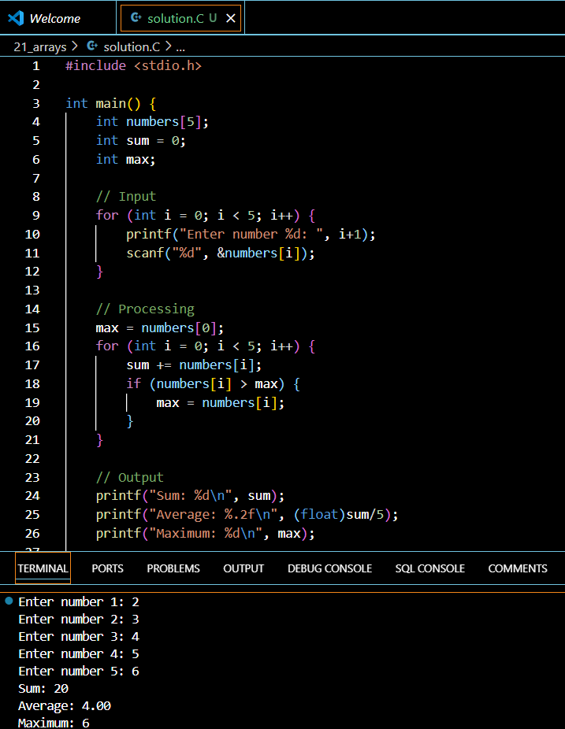

Introduction
Arrays are fundamental building blocks in C programming that allow you to store multiple values of the same data type under a single variable name. Whether you’re developing a simple grade tracking system or a complex data analysis program, understanding arrays is crucial for your journey as a C programmer.
Understanding Arrays in C
What is an Array?
An array is a collection of elements of the same data type stored in contiguous memory locations. Think of it as a row of boxes, each containing a value, where you can access any box using its position number (index).
Memory Organization
int vals[5] = {10, 40, 70, 90, 120};In memory, this array looks like:
vals[0] → 10
vals[1] → 40
vals[2] → 70
vals[3] → 90
vals[4] → 120Important Characteristics
- Arrays start at index 0 (zero-based indexing)
- All elements must be of the same data type
- Array size must be defined at declaration (except in special cases)
- Memory is allocated contiguously
Array Declaration and Initialization
Basic Syntax
// Basic array declaration
int numbers[5];
// Declaration with initialization
int scores[5] = {95, 89, 78, 92, 88};
// Size inference initialization
int grades[] = {85, 90, 75, 88, 92};Multiple Initialization Methods
- Empty Initialization
float amount[100] = {0.0}; // Initializes all elements to 0- Partial Initialization
int values[5] = {1, 2}; // Remaining elements are set to 0- Character Array Initialization
char name[6] = "Hello"; // Includes null terminator
char grades[5] = {'A', 'B', 'C', 'D', 'F'};Working with Array Elements
Accessing Elements
int scores[5] = {95, 89, 78, 92, 88};
printf("First score: %d\n", scores[0]);
printf("Last score: %d\n", scores[4]);Modifying Elements
scores[2] = 85; // Changes the third elementCommon Array Operations
Iterating Through Arrays
int total = 0;
for (int i = 0; i < 5; i++) {
total += scores[i];
}
float average = (float)total / 5;Input and Output Example
int gameScores[10];
// Input scores
for (int i = 0; i < 10; i++) {
printf("Enter score for game %d: ", i+1);
scanf("%d", &gameScores[i]);
}
// Display scores
for (int i = 0; i < 10; i++) {
printf("Game %d: %d\n", i+1, gameScores[i]);
}Best Practices and Common Pitfalls
Memory Management
- Always declare arrays with appropriate sizes
- Avoid accessing elements outside array bounds
- Initialize arrays before using them
Common Mistakes to Avoid
- Accessing beyond array bounds
- Forgetting to initialize arrays
- Assuming uninitialized arrays contain zeros
- Using wrong data types for array elements
Your Turn!
Problem:
Create a program that:
- Declares an array of 5 integers
- Fills it with user input
- Calculates the sum and average
- Finds the maximum value
Click here for Solution!
#include <stdio.h>
int main() {
int numbers[5];
int sum = 0;
int max;
// Input
for (int i = 0; i < 5; i++) {
printf("Enter number %d: ", i+1);
scanf("%d", &numbers[i]);
}
// Processing
max = numbers[0];
for (int i = 0; i < 5; i++) {
sum += numbers[i];
if (numbers[i] > max) {
max = numbers[i];
}
}
// Output
printf("Sum: %d\n", sum);
printf("Average: %.2f\n", (float)sum/5);
printf("Maximum: %d\n", max);
return 0;
}
Quick Takeaways
- Arrays store multiple elements of the same data type
- Array indices start at 0
- Array size must be defined at declaration
- Use loops to process array elements efficiently
- Always initialize arrays before using them
Frequently Asked Questions
Q: Why do arrays start at index 0? A: This is because the index represents the offset from the start of the array in memory.
Q: Can I change the size of an array after declaration? A: No, arrays in C have fixed sizes. For dynamic sizing, use dynamic memory allocation.
Q: What happens if I access an array out of bounds? A: This leads to undefined behavior and can crash your program or corrupt memory.
Q: Can I mix different data types in an array? A: No, arrays in C can only store elements of the same data type.
Q: How do I find the length of an array? A: Use sizeof(array)/sizeof(array[0]) for arrays defined in the same scope.
I’ll update the References section with the provided URLs while maintaining the article’s content. Here’s the revised References section:
References
W3Resource - C Programming Exercises: Array https://www.w3resource.com/c-programming-exercises/array/index.php
UIC Computer Science - C Programming Course Notes on Arrays https://www.cs.uic.edu/~jbell/CourseNotes/C_Programming/Arrays.html
GeeksforGeeks - C Arrays https://www.geeksforgeeks.org/c-arrays/
We hope this guide helps you master arrays in C programming! If you found this helpful, please share it with fellow programmers and leave your comments below.
Happy Coding! 🚀
You can connect with me at any one of the below:
Telegram Channel here: https://t.me/steveondata
LinkedIn Network here: https://www.linkedin.com/in/spsanderson/
Mastadon Social here: https://mstdn.social/@stevensanderson
RStats Network here: https://rstats.me/@spsanderson
GitHub Network here: https://github.com/spsanderson
Bluesky Network here: https://bsky.app/profile/spsanderson.com
My Book: Extending Excel with Python and R here: https://packt.link/oTyZJ